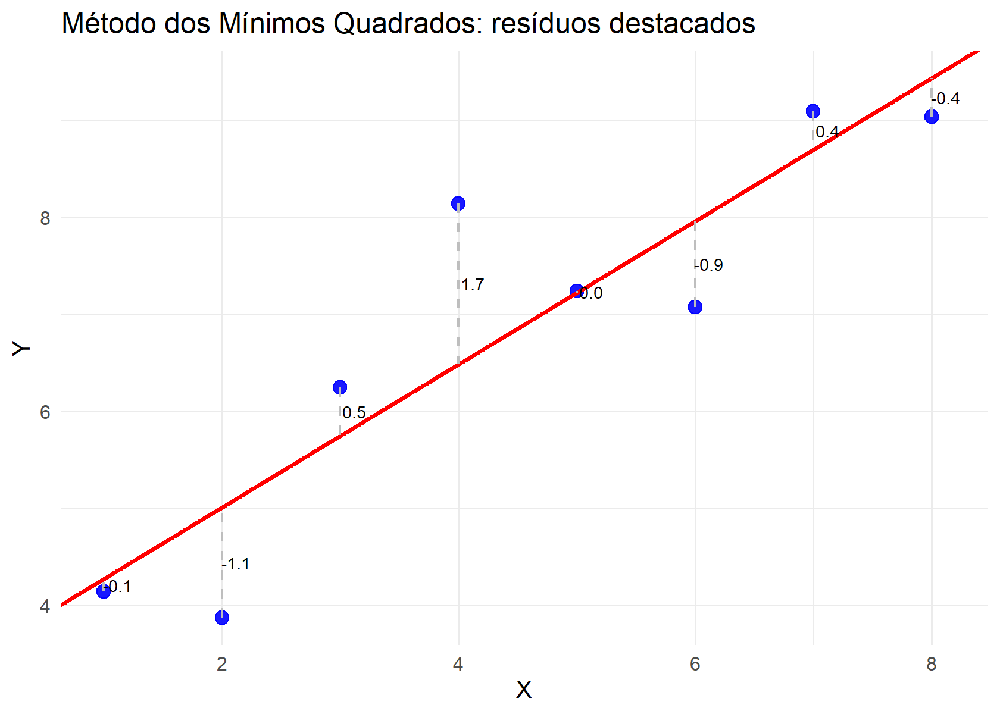

5 Estimação por Mínimos Quadrados no MRLS
5.1 Paradigmas de Estimação no MRLS
A formulação do Modelo de Regressão Linear Simples (MRLS), discutida anteriormente, descreve a estrutura da média condicional de \(Y\) em função de \(X\), isto é,
\[ E(Y_i \mid X_i) = \beta_0 + \beta_1 X_i. \]
O desafio agora é estimar os parâmetros desconhecidos \(\beta_0\) e \(\beta_1\) a partir de dados observados \(\{(X_i,Y_i)\}_{i=1}^n\). Esse processo de estimação pode ser realizado via diferentes métodos, cada um apoiado em princípios e hipóteses próprias.
A estimação pode ser conduzida sob diferentes paradigmas, isto é, diferentes princípios fundamentais que definem o que significa “estimar bem” um parâmetro. Esses paradigmas não diferem apenas em técnica, mas em filosofia estatística e nas hipóteses assumidas sobre o modelo.
O Método dos Mínimos Quadrados Ordinários (MQO) é a abordagem clássica no contexto da regressão linear. Seu princípio é puramente geométrico e algébrico: escolher \(\hat\beta_0\) e \(\hat\beta_1\) de modo a minimizar a soma dos quadrados dos resíduos,
\[ S(\beta_0,\beta_1) = \sum_{i=1}^n \left[Y_i - (\beta_0 + \beta_1 X_i)\right]^2. \]
Esse critério não exige, para a obtenção dos estimadores, a especificação de uma distribuição para os erros. A minimização conduz a um sistema de equações conhecido como equações normais, que caracteriza a solução de mínimos quadrados (ver Draper e Smith (1998); Montgomery, Peck, e Vining (2021)). A ausência de suposição distributiva mostra que o MQO é, antes de tudo, um procedimento de ajuste determinístico baseado na estrutura linear do modelo.
Do ponto de vista estatístico, sob as hipóteses já apresentadas, a saber, linearidade nos parâmetros, \(E(\varepsilon_i\mid X_i)=0\), homoscedasticidade e ausência de correlação entre erros os estimadores de MQO possuem propriedades fundamentais como não viés e variâncias com forma explícita. Essas propriedades não dependem da normalidade dos erros; a normalidade é necessária apenas quando se desejam distribuições exatas em amostras finitas para testes e intervalos de confiança (ver Kutner et al. (2005)). Assim, o MQO é um método de estimação que se apoia primariamente na estrutura do modelo médio e nas condições de regularidade, e não em hipóteses distributivas fortes.
Outro caminho é o Método da Máxima Verossimilhança (MV). Nesse paradigma, parte-se da especificação completa da distribuição condicional de \(Y_i\mid X_i\), frequentemente assumindo
\[ \varepsilon_i \sim \mathcal{N}(0,\sigma^2), \]
o que implica que \(Y_i\mid X_i\) também segue distribuição normal com média \(\mu_i=\beta_0+\beta_1X_i\) e variância \(\sigma^2\). Os estimadores são então definidos como aqueles que maximizam a função de verossimilhança, isto é, a probabilidade conjunta dos dados observados vista como função dos parâmetros. Quando o modelo probabilístico está corretamente especificado, a MV produz estimadores consistentes, assintoticamente normais e eficientes sob condições regulares (ver Casella e Berger (2002)).
No caso particular do modelo linear com erros normais homoscedásticos e não correlacionados, os estimadores de máxima verossimilhança coincidem com os estimadores de mínimos quadrados. Essa coincidência não é acidental: a minimização da soma de quadrados é equivalente à maximização da verossimilhança normal. Contudo, conceitualmente, os dois métodos partem de princípios distintos, um geométrico/algebraico e outro probabilístico.
Uma terceira alternativa são os métodos bayesianos, nos quais os parâmetros \(\beta_0\) e \(\beta_1\) são tratados como variáveis aleatórias. Nesse caso, especifica-se uma distribuição a priori conjunta para \(\beta_0\) e \(\beta_1\) e combina-se essa informação com a verossimilhança dos dados por meio do Teorema de Bayes, obtendo-se a distribuição a posteriori
\[ p(\beta_1,\beta_2 \mid y,X) \propto p(y,X \mid \beta_1,\beta_2)\, p(\beta_1,\beta_2). \]
A estimação passa então a ser baseada em características dessa distribuição a posteriori (como média, mediana ou moda). Esse paradigma explicita a incerteza sobre os parâmetros e permite incorporar informação prévia de forma formal (ver Casella e Berger (2002); Gelman et al. (2014)).
Portanto, a estimação no MRLS pode ser conduzida sob diferentes paradigmas: minimização de resíduos (MQO), maximização da verossimilhança (MV) ou atualização bayesiana de crenças. Cada abordagem parte de fundamentos conceituais distintos, tais quais, geométrico-algébrico, probabilístico ou epistemológico, e conduz a interpretações próprias dos parâmetros e da incerteza associada.
Neste livro, a estimação por mínimos quadrados ordinários (MQO) receberá tratamento mais detalhado e sistemático. A razão é dupla: em primeiro lugar, o MQO não exige a especificação de uma distribuição para os erros para a obtenção dos estimadores, apoiando-se apenas na estrutura do modelo médio e nas hipóteses clássicas de exogeneidade e regularidade; em segundo lugar, ele constitui a base do Teorema de Gauss–Markov e de grande parte da teoria dos modelos lineares, servindo como alicerce conceitual para extensões posteriores.
A máxima verossimilhança (MV) também será contemplada, sobretudo quando discutirmos aspectos inferenciais e conexões entre estrutura probabilística e eficiência assintótica. No caso do modelo linear com erros normais, veremos inclusive a coincidência formal entre MQO e MV, o que reforça a unidade conceitual entre os métodos sob hipóteses adicionais.
Por outro lado, embora o paradigma bayesiano seja conceitualmente relevante e metodologicamente poderoso, sua abordagem completa exigiria o desenvolvimento de ferramentas próprias, como escolha de distribuições a priori, análise da posteriori e métodos computacionais, que extrapolam os objetivos centrais deste texto. Assim, ele será mencionado para fins de contextualização, mas não será desenvolvido formalmente neste livro.
5.2 O Critério dos Mínimos Quadrados Ordinários
O Método dos Mínimos Quadrados Ordinários (MQO) é a abordagem clássica para a estimação em regressão linear. Seu objetivo é encontrar a reta que melhor descreve a relação média entre a variável resposta \(Y\) e a variável explicativa \(X\). Essa “melhor” reta é definida como aquela que minimiza a soma dos quadrados dos resíduos, isto é, das diferenças entre os valores observados e os valores ajustados pelo modelo (ver Kutner et al. (2005); Montgomery, Peck, e Vining (2021)).
Se denotarmos por \(\hat{Y}_i\) o valor ajustado para a observação \(i\), temos:
\[ \hat{Y}_i = \hat{\beta}_0 + \hat{\beta}_1 X_i, \]
e o resíduo correspondente é
\[ e_i = Y_i - \hat{Y}_i. \] O critério de mínimos quadrados escolhe os parâmetros que minimizam a função de perda quadrática
\[ S(\beta_0, \beta_1) = \sum_{i=1}^n \left[ Y_i - (\beta_0 + \beta_1 X_i) \right]^2. \]
Do ponto de vista matemático, trata-se de um problema clássico de otimização: encontrar \((\hat\beta_0,\hat\beta_1)\) que minimizam \(S(\beta_0,\beta_1)\) sobre \(\mathbb{R}^2\). A condição de primeira ordem leva a um sistema de duas equações lineares nas incógnitas \(\beta_0\) e \(\beta_1\), conhecido como equações normais. Essas equações caracterizam completamente a solução de mínimos quadrados no modelo linear simples (ver Draper e Smith (1998)).
Esse procedimento garante que, entre todas as retas possíveis, a escolhida é aquela que deixa os resíduos, em conjunto, “o mais curtos possível” no sentido quadrático. A escolha da penalização quadrática não é arbitrária: a função objetivo é uma função polinomial de segundo grau nos parâmetros, contínua e diferenciável, e admite solução única sempre que os valores de \(X\) não forem todos iguais, isto é, sempre que houver variabilidade na variável explicativa. Essa condição assegura a existência e a unicidade da reta de mínimos quadrados.
Além disso, a penalização pelo quadrado dos desvios atribui maior peso a observações mais afastadas, o que explica tanto a eficiência do método sob hipóteses clássicas quanto sua sensibilidade a valores discrepantes (ver Weisberg (2005)).
A figura acima ilustra essa lógica. Os pontos azuis representam as observações \((X_i,Y_i)\), a reta vermelha mostra a reta ajustada pelo MQO, e as linhas tracejadas cinzas indicam os resíduos associados a cada ponto. Visualmente, o MQO busca a reta que minimiza a soma dos quadrados dessas distâncias verticais. Essa interpretação geométrica ajuda a compreender que a regressão não elimina o erro, mas organiza o ruído de forma a recuperar a estrutura média do fenômeno.
Essa formulação admite duas interpretações complementares.
- Geométrica: o MQO pode ser visto como a projeção ortogonal do vetor de respostas \(\mathbf{Y}=(Y_1,\ldots,Y_n)'\) no subespaço gerado pelos vetores \(\mathbf{1}=(1,\ldots,1)'\) e \(\mathbf{X}=(X_1,\ldots,X_n)'\). A condição de minimização implica que o vetor de resíduos \(\hat\varepsilon = Y-\hat Y\) é ortogonal ao espaço gerado pelos regressores, isto é,
\[ \sum_{i=1}^n \hat\varepsilon_i = 0 \quad \text{e} \quad \sum_{i=1}^n X_i \hat\varepsilon_i = 0. \]
Essas duas condições são precisamente as equações normais no caso simples.
- Estatística: a ortogonalidade amostral dos resíduos aos regressores é o análogo empírico da hipótese populacional
\[ E(\varepsilon_i \mid X_i)=0. \] Em outras palavras, após o ajuste, não resta componente linear em \(X\) capaz de explicar sistematicamente os resíduos. A condição populacional de exogeneidade é refletida, no nível amostral, pela ortogonalidade dos resíduos estimados (ver Kutner et al. (2005)).
Um aspecto central é que o MQO não exige, para a obtenção dos estimadores, a especificação de uma distribuição para os erros. Sob as hipóteses de média condicional corretamente especificada, homoscedasticidade e ausência de correlação entre erros, os estimadores resultantes são não viesados e apresentam variâncias com forma explícita, propriedades que independem da normalidade (ver Montgomery, Peck, e Vining (2021)).
A normalidade é introduzida apenas quando se desejam distribuições exatas em amostras finitas para estatísticas de teste e construção de intervalos de confiança. Em contextos práticos com caudas pesadas ou observações discrepantes, podem ser considerados métodos robustos ou funções de perda alternativas. Essa generalidade explica por que o MQO constitui o ponto de partida natural e o método mais amplamente ensinado e utilizado na análise de regressão linear.
5.3 Solução Analítica: A Reta de Regressão por MQO
ImportanteTeorema — Reta de Regressão por MQO
No modelo de regressão linear simples
\[ Y_i = \beta_0 + \beta_1 X_i + \varepsilon_i, \quad i = 1,2,\dots,n, \]
os estimadores de mínimos quadrados ordinários (MQO) de \(\beta_0\) e \(\beta_1\) são obtidos como aqueles que minimizam a soma dos quadrados dos resíduos. A solução do problema de minimização leva às formas fechadas:
\[ \hat{\beta}_1 = \frac{S_{xy}}{S_{xx}}, \qquad \hat{\beta}_0 = \bar{Y} - \hat{\beta}_1 \bar{X}, \]
onde
\[ S_{xx}=\sum_{i=1}^n (X_i-\bar X)^2, \qquad S_{xy}=\sum_{i=1}^n (X_i-\bar X)(Y_i-\bar Y). \]
A demonstração resulta da minimização da função \[ S(\beta_0,\beta_1)=\sum_{i=1}^n \left[Y_i-(\beta_0+\beta_1X_i)\right]^2, \]
por meio do cálculo das derivadas parciais em relação a \(\beta_0\) e \(\beta_1\) e da resolução do sistema de equações normais correspondente. A dedução algébrica completa pode ser consultada no Apêndice de Demonstrações {#demo}.
Esse resultado estabelece a reta de regressão por MQO como a linha que, ao mesmo tempo, minimiza a soma dos quadrados dos resíduos e traduz o padrão médio de associação entre \(X\) e \(Y\). A estrutura explícita das soluções mostra que a existência e a unicidade dependem apenas de \(S_{xx}>0\), isto é, da presença de variabilidade em \(X\), condição necessária para que a informação sobre a inclinação seja identificável (ver Kutner et al. (2005); Montgomery, Peck, e Vining (2021)).
Do ponto de vista matemático, a minimização de \(S(\beta_0,\beta_1)\) conduz a uma função quadrática estritamente convexa nos parâmetros quando \(S_{xx}>0\), assegurando que a solução encontrada pelas equações normais seja única. A demonstração detalhada dessa propriedade pode ser consultada no Apêndice de Demonstrações {#demo}.
No entanto, conhecer a forma explícita da reta ajustada é apenas o primeiro passo. A expressão fechada dos estimadores revela como eles dependem das quantidades amostrais, mas não informa, por si só, se tais estimadores são centrados nos verdadeiros parâmetros, quão precisos são ou como se comportam sob repetição amostral. Para que possamos confiar nesses estimadores e utilizá-los em inferência estatística, precisamos examinar suas propriedades probabilísticas: não viés, variâncias, covariância entre \(\hat\beta_0\) e \(\hat\beta_1\) e qualidade das predições produzidas. É justamente esse o foco da próxima seção (ver Kutner et al. (2005)).
5.3.1 Interpretação dos Estimadores obtidos via MQO
- O estimador da inclinação pode ser reescrito como
\[ \hat\beta_1 = \frac{\sum_{i=1}^n (X_i-\bar X)(Y_i-\bar Y)} {\sum_{i=1}^n (X_i-\bar X)^2}, \]
o que evidencia que ele corresponde à covariância amostral entre \(X\) e \(Y\) dividida pela variância amostral de \(X\). Essa forma deixa claro que \(\hat\beta_1\) mede a variação média de \(Y\) associada a um aumento unitário em \(X\), sendo proporcional ao grau de associação linear entre as duas variáveis (ver Montgomery, Peck, e Vining (2021)).
- O estimador do intercepto,
\[ \hat\beta_0 = \bar Y - \hat\beta_1 \bar X, \]
implica que a reta ajustada satisfaz
\[ \hat Y(\bar X)=\bar Y, \]
ou seja, a reta de regressão passa necessariamente pelo ponto médio amostral \((\bar X,\bar Y)\). Essa propriedade decorre diretamente das equações normais e da ortogonalidade dos resíduos aos regressores (ver Kutner et al. (2005)).
5.4 Propriedades Probabilísticas dos Estimadores de MQO
Nesta seção reunimos as propriedades essenciais dos estimadores de mínimos quadrados no modelo
\[ Y_i = \beta_0 + \beta_1 X_i + \varepsilon_i, \quad i = 1,2,\dots,n, \] sob as hipóteses usuais de exogeneidade fraca e regularidade: \[ E[\varepsilon_i \mid X_i]=0, \qquad Var(\varepsilon_i\mid X_i)=\sigma^2, \qquad Cov(\varepsilon_i,\varepsilon_j\mid X_i,X_j)=0 \ \forall(i \neq j), \]
com
\[ S_{xx}=\sum_{i=1}^n (X_i-\bar X)^2>0. \]
Essas condições são suficientes para estabelecer as principais propriedades dos estimadores de MQO, sem necessidade de assumir normalidade dos erros. Trata-se exatamente do conjunto de hipóteses sob o qual se desenvolve a teoria clássica do modelo linear (ver Kutner et al. (2005); Montgomery, Peck, e Vining (2021)).
Os estimadores de mínimos quadrados ordinários (MQO)
\[ \hat{\beta}_1 = \frac{S_{xy}}{S_{xx}}, \qquad \hat{\beta}_0 = \bar{Y} - \hat{\beta}_1 \bar{X}, \]
em que
\[ S_{xy}=\sum_{i=1}^n (X_i-\bar X)(Y_i-\bar Y), \qquad \bar{Y} = \frac{1}{n}\sum_{i=1}^n Y_i, \qquad \bar{X} = \frac{1}{n}\sum_{i=1}^n X_i, \] possuem propriedades importantes, que garantem sua validade para inferência estatística.
5.4.1 Não viés
Ambos os estimadores são não viesados:
\[ E[\hat{\beta}_0] = \beta_0 \qquad \text{e} \qquad E[\hat{\beta}_1] = \beta_1. \] Um estimador é dito não viesado quando sua esperança coincide com o parâmetro verdadeiro. No presente caso, os estimadores \(\hat\beta_0\) e \(\hat\beta_1\) são centrados em \(\beta_0\) e \(\beta_1\), respectivamente. Em termos frequentistas, isso significa que, sob repetição hipotética do processo amostral nas mesmas condições, a média das estimativas convergiria para os valores verdadeiros.
A demonstração formal desse resultado baseia-se na linearidade do operador esperança e na hipótese de exogeneidade fraca \(E[\varepsilon_i\mid X_i]=0\), e pode ser consultada no Apêndice de Demonstrações {#demo}. Conceitualmente, o ponto central é que, ao condicionar em \(X\), o erro não contém componente sistemática capaz de deslocar, em média, os estimadores.
5.4.2 Variâncias e covariância dos estimadores
As variâncias dos estimadores são dadas por
\[ Var(\hat{\beta}_0) = \left(\frac{1}{n} + \frac{\bar{X}^2}{S_{xx}}\right)\sigma^2, \qquad Var(\hat{\beta}_1) = \frac{1}{S_{xx}}\sigma^2, \]
e a covariância entre eles é
\[ Cov(\hat{\beta}_0,\hat{\beta}_1) = - \frac{\bar{X}}{S_{xx}}\sigma^2. \]
Essas expressões decorrem diretamente da representação linear dos estimadores em função dos \(Y_i\) e das hipóteses sobre a estrutura de variância-covariância dos erros. A demonstração detalhada também pode ser vista no Apêndice de Demonstrações {#demo} (ver Kutner et al. (2005)).
Algumas interpretações conceituais importantes emergem dessas fórmulas:
Influência da dispersão de \(X\): quanto maior \(S_{xx}\), menor \(Var(\hat{\beta}_1)\). Portanto, amostras com maior variabilidade em \(X\) contêm mais informação sobre a inclinação da reta. Se os valores de \(X\) estiverem muito concentrados, a estimativa da inclinação torna-se imprecisa.
Dependência do intercepto em relação à origem: a variância de \(\hat{\beta}_0\) depende de \(\bar X\). Quanto mais distante a média de \(X\) estiver da origem, maior será a variância do intercepto, refletindo o fato de que \(\hat\beta_0\) é obtido por extrapolação da reta até \(X=0\).
Covariância negativa: quando \(\bar X>0\), a covariância entre \(\hat\beta_0\) e \(\hat\beta_1\) é negativa. Isso indica que uma estimativa maior da inclinação tende a ser compensada por uma estimativa menor do intercepto, preservando a propriedade geométrica de que a reta ajustada passa por \((\bar X,\bar Y)\).
Do ponto de vista geométrico, essas propriedades decorrem da ortogonalidade dos resíduos aos regressores, isto é,
\[ \sum_{i=1}^n \hat\varepsilon_i = 0 \qquad \text{e} \qquad \sum_{i=1}^n X_i \hat\varepsilon_i = 0. \]
Essas condições são equivalentes às equações normais e garantem que a projeção de \(Y\) sobre o subespaço gerado por \(1\) e \(X\) seja ortogonal ao vetor de resíduos. A conexão entre ortogonalidade e estrutura de variâncias é discutida em textos clássicos de regressão linear (ver Montgomery, Peck, e Vining (2021)).
5.4.3 Estimativa de \(\sigma^2\) (graus de liberdade e não viés)
Definindo a soma dos quadrados dos resíduos como
\[ SQRes = \sum_{i=1}^n (Y_i - \hat{Y}_i)^2, \]
temos que
\[ E[SQRes] = (n-2)\sigma^2. \] A demonstração desse resultado utiliza a decomposição ortogonal do vetor \(Y\) em componente ajustada e componente residual, podendo ser consultada no Apêndice de Demonstrações {#demo}.
Assim, o estimador
\[ s^2 = \frac{SQRes}{n-2} \]
é não viesado para a variância dos erros:
\[ E[s^2] = \sigma^2. \] Os dois graus de liberdade subtraídos refletem a estimação dos dois parâmetros do modelo \((\beta_0, \beta_1)\). Essa correção garante que a variabilidade residual não seja subestimada pelo fato de termos ajustado uma reta aos dados.
Na prática, substitui-se \(\sigma^2\) por \(s^2\) nas expressões de \(Var(\hat\beta_0)\) e \(Var(\hat\beta_1)\), obtendo-se estimativas dos erros-padrão. Observe que até aqui não foi necessária a suposição de normalidade: as propriedades de não viés e as fórmulas de variância decorrem apenas das hipóteses de média zero, homoscedasticidade e ausência de correlação entre erros (ver Kutner et al. (2005); Montgomery, Peck, e Vining (2021)).
Portanto, os estimadores de MQO no MRLS apresentam um conjunto de propriedades fundamentais: são não viesados, possuem variâncias explicitamente caracterizadas, exibem covariância estrutural negativa entre intercepto e inclinação e permitem a construção de um estimador não viesado de \(\sigma^2\) a partir dos resíduos.
Essas características asseguram a solidez probabilística do método sob hipóteses relativamente gerais e preparam o terreno para a próxima questão natural: dentro da classe dos estimadores lineares não viesados, seria possível obter variâncias menores? O Teorema de Gauss–Markov responde negativamente a essa pergunta, estabelecendo a eficiência relativa do MQO.
5.5 Teorema de Gauss–Markov
ImportanteTeorema (Gauss–Markov)
No modelo de regressão linear simples
\[ Y_i = \beta_0 + \beta_1 X_i + \varepsilon_i, \quad i=1,2,\dots,n, \] sob as hipóteses
\[ E[\varepsilon_i\mid X_i]=0, \qquad Var(\varepsilon_i\mid X_i)=\sigma^2, \qquad Cov(\varepsilon_i,\varepsilon_j\mid X_i,X_j)=0 \ (\forall i\neq j), \]
os estimadores de mínimos quadrados ordinários são lineares em \(Y\), não viesados e possuem variância mínima dentro da classe de todos os estimadores lineares não viesados dos parâmetros \(\beta_0\) e \(\beta_1\).
Em outras palavras, se restringirmos nossa atenção a estimadores que sejam combinações lineares das observações \(Y_i\) e que sejam não viesados para os parâmetros verdadeiros, então nenhum outro estimador dessa classe terá variância menor que a dos estimadores de MQO. Essa é a essência do qualificativo best: não significa “melhor entre todos os estimadores possíveis”, mas “melhor dentro da classe dos estimadores lineares não viesados”.
Este teorema organiza três ideias fundamentais:
- Linearidade do estimador: o estimador pode ser escrito como combinação linear das respostas observadas.
- Não viés: sua esperança coincide com o parâmetro verdadeiro.
- Eficiência relativa: entre todos os estimadores que satisfazem (1) e (2), o MQO apresenta a menor variância.
O resultado não depende da normalidade dos erros. Essa é uma distinção crucial: a normalidade é necessária apenas quando se deseja obter distribuições exatas finitas para estatísticas. A propriedade BLUE decorre exclusivamente da estrutura de média e variância do modelo linear clássico (ver Kutner et al. (2005); Montgomery, Peck, e Vining (2021)).
Geometricamente, o teorema está intimamente ligado à interpretação do MQO como projeção ortogonal do vetor \(Y\) no subespaço gerado pelos regressores. A projeção ortogonal é, por construção, o vetor ajustado que minimiza a distância quadrática a \(Y\). A minimização da distância quadrática no espaço amostral se traduz, no plano probabilístico, em minimização da variância entre estimadores lineares não viesados. Essa ponte entre geometria e probabilidade é um dos aspectos mais profundos do modelo linear.
É importante enfatizar também o alcance do resultado. O teorema não afirma que o MQO é o estimador de menor variância entre todos os estimadores imagináveis. Métodos não lineares ou estimadores viesados podem, em certos contextos, apresentar menor erro quadrático médio. O que o Teorema de Gauss–Markov garante é a otimalidade dentro da classe linear não viesada, uma classe ampla e natural no contexto da regressão.
A demonstração formal do teorema, baseada em argumentos de decomposição de variância e ortogonalidade, pode ser consultada no Apêndice de Demonstrações {#demo}.
Em termos práticos, o teorema fornece a base teórica que sustenta o uso do MQO como método padrão de estimação em regressão linear. Ele mostra que, sob hipóteses relativamente fracas e sem necessidade de normalidade, o procedimento adotado é eficiente dentro de uma classe ampla de estimadores. Essa combinação de simplicidade algébrica, interpretação geométrica clara e fundamentação probabilística sólida explica por que o MQO ocupa posição central na estatística aplicada e na econometria.